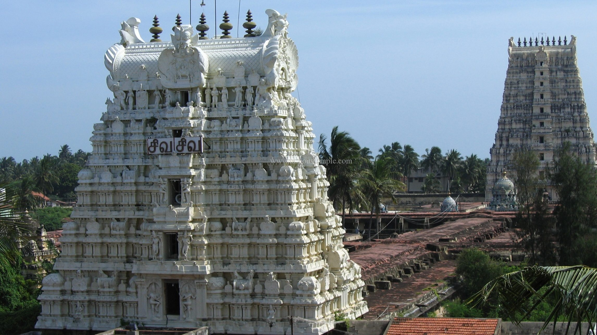
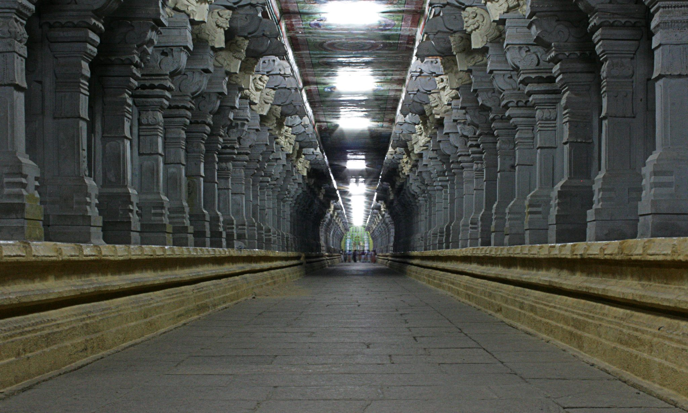
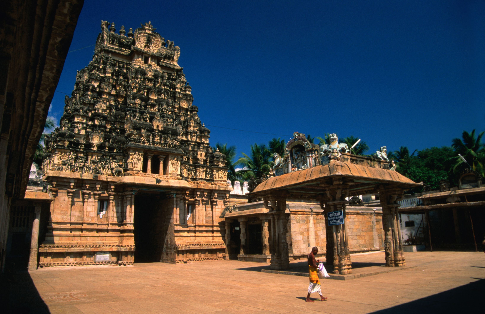
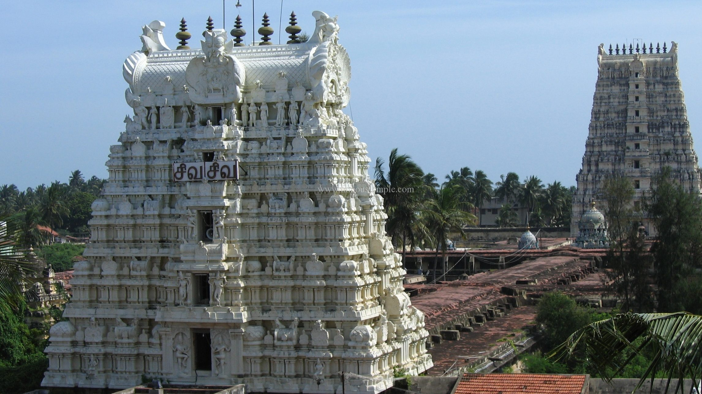
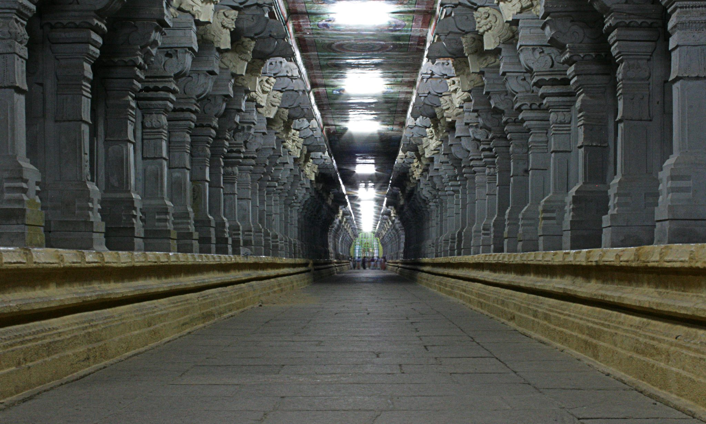
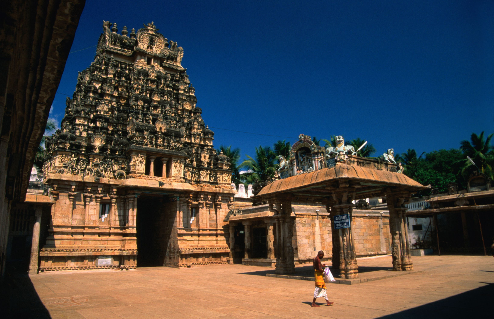

Salvation Quest
Salvation Quest
Rameshwaram
A Quest for Moksh
 





About
Rameswaram, (also spelt as Ramesvaram, Rameshwaram) is a town and a second grade municipality in the Ramanathapuram district in the South Indian state of Tamil Nadu. It is on Pamban Island separated from mainland India by the Pamban channel and is about 40 kilometres from Mannar Island, Sri Lanka. It is in the Gulf of Mannar, at the tip of the Indian peninsula. Pamban Island, also known as Rameswaram Island, is connected to mainland India by the Pamban Bridge. Rameswaram is the terminus of the railway line from Chennai and Madurai. Together with Varanasi, it is considered to be one of the holiest places in India to Hindus, and part of the Char Dham pilgrimage. It is said the Hindu god Rama built a bridge from here across the sea to Lanka to rescue his wife Sita from her abductor Ravana. The Ramanathaswamy Temple, dedicated to the Hindu god Shiva, is at the centre of the town and is closely associated with Rama. The temple and the town are considered a holy pilgrimage site for Shaivas and Vaishnavas.
History
According to the Ramayana, Rama, the seventh avatar of the god Vishnu, prayed to the god Shiva to absolve him of the sin committed during his war against the demon king Ravana in Sri Lanka. Rama wanted to have a large lingam to worship Shiva. He directed Hanuman, the lieutenant in his army, to bring a lingam from the Himalayas. When Hanuman was delayed in bringing the lingam, Sita, the wife of Rama, built a small lingam out of the sand available in the sea shore, which is believed to be the lingam in the sanctum.
Temple
The primary deity of the temple is Ramanathaswamy (Shiva) in the form of lingam. There are two lingams inside the sanctum - one built by Sita, from sand, residing as the main deity, Ramalingam and the one brought by Hanuman from Kailash called Vishwalingam. Rama instructed that the Vishwalingam should be worshipped first since it was brought by Hanuman - the tradition continues even today. Like all ancient temples in South India, there is a high compound wall (madil) on all four sides of the temple premises measuring about 865 feet furlong from east to west and one furlong of 657 feet from north to south with huge towers (Gopurams) to the east and the west and finished gate towers to the north and south. The temple has striking long corridors in its interior, running between huge colonnades on platforms above five feet high. The second corridor is formed by sandstone pillars, beams and ceiling. The junction of the third corridor on the west and the paved way leading from the western gopuram to the Setumadhava shrine forms a unique structure in the form of a chess board, popularly known as Chokkattan Madapam, where the Utsava deities are adorned and kept during the Vasanthotsavam (Spring festival) and on the 6th day festival in Adi (July–August) and Masi (February–March) conducted by the Setupati of Ramnad.
TRAVEL
Nearest airport is Madurai Airport (Madurai Airport (IXM), Madurai, Tamil Nadu) 149 km away. Tuticorin Airport (TCR), Thoothukudi, Tamil Nadu 142 km away. You can easily get regular trains to Rameshwaram from other major cities of the country. Railway Station(s): Rameswaram (RMM)
STAY
List of Ashrams SRI KAILASH ASHRAM BRANCH Place of worship OPPOSITE RAMESWARAM BUS STAND Goswami Mutt Ashram 45, West Street, Opp Post Office SHRI KRISHNA PRANAMI MANGAL MANDIR AND DHARMSHALA Hindu temple Sita Ram Ashram Budget hotel Karivena Satram Guest house Rameshwaram Devasthanam Rest House Hotel Rameswaram-Dhanushkodi Rd